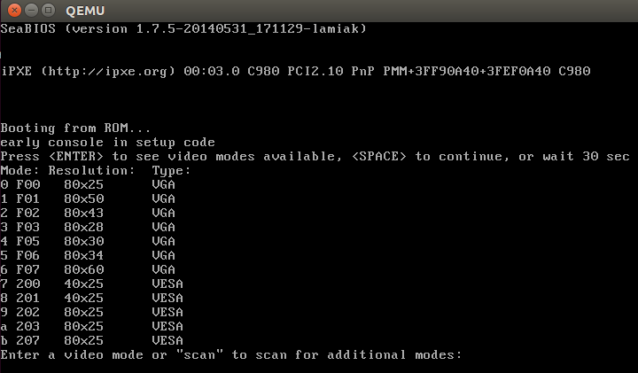

Kernel booting process. Part 3.
Video mode initialization and transition to protected mode
This is the third part of the Kernel booting process series. In the previous part, we stopped right before the call to the set_video routine from main.c.
In this part, we will look at:
- Video mode initialization in the kernel setup code,
- the preparations made before switching into protected mode,
- the transition to protected mode
NOTE If you don't know anything about protected mode, you can find some information about it in the previous part. Also, there are a couple of links which can help you.
As I wrote above, we will start from the set_video function which is defined in the arch/x86/boot/video.c source code file. We can see that it starts by first getting the video mode from the boot_params.hdr structure:
u16 mode = boot_params.hdr.vid_mode;
which we filled in the copy_boot_params function (you can read about it in the previous post). vid_mode is an obligatory field which is filled by the bootloader. You can find information about it in the kernel boot protocol:
Offset Proto Name Meaning
/Size
01FA/2 ALL vid_mode Video mode control
As we can read from the Linux kernel boot protocol:
vga=<mode>
<mode> here is either an integer (in C notation, either
decimal, octal, or hexadecimal) or one of the strings
"normal" (meaning 0xFFFF), "ext" (meaning 0xFFFE) or "ask"
(meaning 0xFFFD). This value should be entered into the
vid_mode field, as it is used by the kernel before the command
line is parsed.
So we can add the vga option to the grub (or another bootloader's) configuration file and it will pass this option to the kernel command line. This option can have different values as mentioned in the description. For example, it can be an integer number 0xFFFD or ask. If you pass ask to vga, you will see a menu like this:

which will ask to select a video mode. We will look at its implementation, but before diving into the implementation we have to look at some other things.
Kernel data types
Earlier we saw definitions of different data types like u16 etc. in the kernel setup code. Let's look at a couple of data types provided by the kernel:
| Type | char | short | int | long | u8 | u16 | u32 | u64 |
|---|---|---|---|---|---|---|---|---|
| Size | 1 | 2 | 4 | 8 | 1 | 2 | 4 | 8 |
If you read the source code of the kernel, you'll see these very often and so it will be good to remember them.
Heap API
After we get vid_mode from boot_params.hdr in the set_video function, we can see the call to the RESET_HEAP function. RESET_HEAP is a macro which is defined in arch/x86/boot/boot.h header file.
This macro is defined as:
#define RESET_HEAP() ((void *)( HEAP = _end ))
If you have read the second part, you will remember that we initialized the heap with the init_heap function. We have a couple of utility macros and functions for managing the heap which are defined in arch/x86/boot/boot.h header file.
They are:
#define RESET_HEAP()
As we saw just above, it resets the heap by setting the HEAP variable to _end, where _end is just extern char _end[];
Next is the GET_HEAP macro:
#define GET_HEAP(type, n) \
((type *)__get_heap(sizeof(type),__alignof__(type),(n)))
for heap allocation. It calls the internal function __get_heap with 3 parameters:
- the size of the datatype to be allocated for
__alignof__(type)specifies how variables of this type are to be alignednspecifies how many items to allocate
The implementation of __get_heap is:
static inline char *__get_heap(size_t s, size_t a, size_t n)
{
char *tmp;
HEAP = (char *)(((size_t)HEAP+(a-1)) & ~(a-1));
tmp = HEAP;
HEAP += s*n;
return tmp;
}
and we will further see its usage, something like:
saved.data = GET_HEAP(u16, saved.x * saved.y);
Let's try to understand how __get_heap works. We can see here that HEAP (which is equal to _end after RESET_HEAP()) is assigned the address of the aligned memory according to the a parameter. After this we save the memory address from HEAP to the tmp variable, move HEAP to the end of the allocated block and return tmp which is the start address of allocated memory.
And the last function is:
static inline bool heap_free(size_t n)
{
return (int)(heap_end - HEAP) >= (int)n;
}
which subtracts value of the HEAP pointer from the heap_end (we calculated it in the previous part) and returns 1 if there is enough memory available for n.
That's all. Now we have a simple API for heap and can setup video mode.
Set up video mode
Now we can move directly to video mode initialization. We stopped at the RESET_HEAP() call in the set_video function. Next is the call to store_mode_params which stores video mode parameters in the boot_params.screen_info structure which is defined in include/uapi/linux/screen_info.h header file.
If we look at the store_mode_params function, we can see that it starts with a call to the store_cursor_position function. As you can understand from the function name, it gets information about the cursor and stores it.
First of all, store_cursor_position initializes two variables which have type biosregs with AH = 0x3, and calls the 0x10 BIOS interruption. After the interruption is successfully executed, it returns row and column in the DL and DH registers. Row and column will be stored in the orig_x and orig_y fields of the boot_params.screen_info structure.
After store_cursor_position is executed, the store_video_mode function will be called. It just gets the current video mode and stores it in boot_params.screen_info.orig_video_mode.
After this, store_mode_params checks the current video mode and sets the video_segment. After the BIOS transfers control to the boot sector, the following addresses are for video memory:
0xB000:0x0000 32 Kb Monochrome Text Video Memory
0xB800:0x0000 32 Kb Color Text Video Memory
So we set the video_segment variable to 0xb000 if the current video mode is MDA, HGC, or VGA in monochrome mode and to 0xb800 if the current video mode is in color mode. After setting up the address of the video segment, the font size needs to be stored in boot_params.screen_info.orig_video_points with:
set_fs(0);
font_size = rdfs16(0x485);
boot_params.screen_info.orig_video_points = font_size;
First of all, we put 0 in the FS register with the set_fs function. We already saw functions like set_fs in the previous part. They are all defined in arch/x86/boot/boot.h. Next, we read the value which is located at address 0x485 (this memory location is used to get the font size) and save the font size in boot_params.screen_info.orig_video_points.
x = rdfs16(0x44a);
y = (adapter == ADAPTER_CGA) ? 25 : rdfs8(0x484)+1;
Next, we get the amount of columns by address 0x44a and rows by address 0x484 and store them in boot_params.screen_info.orig_video_cols and boot_params.screen_info.orig_video_lines. After this, execution of store_mode_params is finished.
Next we can see the save_screen function which just saves the contents of the screen to the heap. This function collects all the data which we got in the previous functions (like the rows and columns, and stuff) and stores it in the saved_screen structure, which is defined as:
static struct saved_screen {
int x, y;
int curx, cury;
u16 *data;
} saved;
It then checks whether the heap has free space for it with:
if (!heap_free(saved.x*saved.y*sizeof(u16)+512))
return;
and allocates space in the heap if it is enough and stores saved_screen in it.
The next call is probe_cards(0) from arch/x86/boot/video-mode.c source code file. It goes over all video_cards and collects the number of modes provided by the cards. Here is the interesting part, we can see the loop:
for (card = video_cards; card < video_cards_end; card++) {
/* collecting number of modes here */
}
but video_cards is not declared anywhere. The answer is simple: every video mode presented in the x86 kernel setup code has a definition that looks like this:
static __videocard video_vga = {
.card_name = "VGA",
.probe = vga_probe,
.set_mode = vga_set_mode,
};
where __videocard is a macro:
#define __videocard struct card_info __attribute__((used,section(".videocards")))
which means that the card_info structure:
struct card_info {
const char *card_name;
int (*set_mode)(struct mode_info *mode);
int (*probe)(void);
struct mode_info *modes;
int nmodes;
int unsafe;
u16 xmode_first;
u16 xmode_n;
};
is in the .videocards segment. Let's look in the arch/x86/boot/setup.ld linker script, where we can find:
.videocards : {
video_cards = .;
*(.videocards)
video_cards_end = .;
}
It means that video_cards is just a memory address and all card_info structures are placed in this segment. It means that all card_info structures are placed between video_cards and video_cards_end, so we can use a loop to go over all of it. After probe_cards executes we have a bunch of structures like static __videocard video_vga with the nmodes (the number of video modes) filled in.
After the probe_cards function is done, we move to the main loop in the set_video function. There is an infinite loop which tries to set up the video mode with the set_mode function or prints a menu if we passed vid_mode=ask to the kernel command line or if video mode is undefined.
The set_mode function is defined in video-mode.c and gets only one parameter, mode, which is the number of video modes (we got this value from the menu or in the start of setup_video, from the kernel setup header).
The set_mode function checks the mode and calls the raw_set_mode function. The raw_set_mode calls the selected card's set_mode function, i.e. card->set_mode(struct mode_info*). We can get access to this function from the card_info structure. Every video mode defines this structure with values filled depending upon the video mode (for example for vga it is the video_vga.set_mode function. See the above example of the card_info structure for vga). video_vga.set_mode is vga_set_mode, which checks the vga mode and calls the respective function:
static int vga_set_mode(struct mode_info *mode)
{
vga_set_basic_mode();
force_x = mode->x;
force_y = mode->y;
switch (mode->mode) {
case VIDEO_80x25:
break;
case VIDEO_8POINT:
vga_set_8font();
break;
case VIDEO_80x43:
vga_set_80x43();
break;
case VIDEO_80x28:
vga_set_14font();
break;
case VIDEO_80x30:
vga_set_80x30();
break;
case VIDEO_80x34:
vga_set_80x34();
break;
case VIDEO_80x60:
vga_set_80x60();
break;
}
return 0;
}
Every function which sets up video mode just calls the 0x10 BIOS interrupt with a certain value in the AH register.
After we have set the video mode, we pass it to boot_params.hdr.vid_mode.
Next, vesa_store_edid is called. This function simply stores the EDID (Extended Display Identification Data) information for kernel use. After this store_mode_params is called again. Lastly, if do_restore is set, the screen is restored to an earlier state.
Having done this, the video mode setup is complete and now we can switch to the protected mode.
Last preparation before transition into protected mode
We can see the last function call - go_to_protected_mode - in arch/x86/boot/main.c. As the comment says: Do the last things and invoke protected mode, so let's see what these last things are and switch into protected mode.
The go_to_protected_mode function is defined in arch/x86/boot/pm.c. It contains some functions which make the last preparations before we can jump into protected mode, so let's look at it and try to understand what it does and how it works.
First is the call to the realmode_switch_hook function in go_to_protected_mode. This function invokes the real mode switch hook if it is present and disables NMI. Hooks are used if the bootloader runs in a hostile environment. You can read more about hooks in the boot protocol (see ADVANCED BOOT LOADER HOOKS).
The realmode_switch hook presents a pointer to the 16-bit real mode far subroutine which disables non-maskable interrupts. After the realmode_switch hook (it isn't present for me) is checked, Non-Maskable Interrupts(NMI) is disabled:
asm volatile("cli");
outb(0x80, 0x70); /* Disable NMI */
io_delay();
At first, there is an inline assembly statement with a cli instruction which clears the interrupt flag (IF). After this, external interrupts are disabled. The next line disables NMI (non-maskable interrupt).
An interrupt is a signal to the CPU which is emitted by hardware or software. After getting such a signal, the CPU suspends the current instruction sequence, saves its state and transfers control to the interrupt handler. After the interrupt handler has finished its work, it transfers control back to the interrupted instruction. Non-maskable interrupts (NMI) are interrupts which are always processed, independently of permission. They cannot be ignored and are typically used to signal for non-recoverable hardware errors. We will not dive into the details of interrupts now but we will be discussing them in the coming posts.
Let's get back to the code. We can see in the second line that we are writing the byte 0x80 (disabled bit) to 0x70 (the CMOS Address register). After that, a call to the io_delay function occurs. io_delay causes a small delay and looks like:
static inline void io_delay(void)
{
const u16 DELAY_PORT = 0x80;
asm volatile("outb %%al,%0" : : "dN" (DELAY_PORT));
}
To output any byte to the port 0x80 should delay exactly 1 microsecond. So we can write any value (the value from AL in our case) to the 0x80 port. After this delay the realmode_switch_hook function has finished execution and we can move to the next function.
The next function is enable_a20, which enables the A20 line. This function is defined in arch/x86/boot/a20.c and it tries to enable the A20 gate with different methods. The first is the a20_test_short function which checks if A20 is already enabled or not with the a20_test function:
static int a20_test(int loops)
{
int ok = 0;
int saved, ctr;
set_fs(0x0000);
set_gs(0xffff);
saved = ctr = rdfs32(A20_TEST_ADDR);
while (loops--) {
wrfs32(++ctr, A20_TEST_ADDR);
io_delay(); /* Serialize and make delay constant */
ok = rdgs32(A20_TEST_ADDR+0x10) ^ ctr;
if (ok)
break;
}
wrfs32(saved, A20_TEST_ADDR);
return ok;
}
First of all, we put 0x0000 in the FS register and 0xffff in the GS register. Next, we read the value at the address A20_TEST_ADDR (it is 0x200) and put this value into the variables saved and ctr.
Next, we write an updated ctr value into fs:A20_TEST_ADDR or fs:0x200 with the wrfs32 function, then delay for 1ms, and then read the value from the GS register into the address A20_TEST_ADDR+0x10. In a case when a20 line is disabled, the address will be overlapped, in other case if it's not zero a20 line is already enabled the A20 line.
If A20 is disabled, we try to enable it with a different method which you can find in a20.c. For example, it can be done with a call to the 0x15 BIOS interrupt with AH=0x2041.
If the enable_a20 function finished with a failure, print an error message and call the function die. You can remember it from the first source code file where we started - arch/x86/boot/header.S:
die:
hlt
jmp die
.size die, .-die
After the A20 gate is successfully enabled, the reset_coprocessor function is called:
outb(0, 0xf0);
outb(0, 0xf1);
This function clears the Math Coprocessor by writing 0 to 0xf0 and then resets it by writing 0 to 0xf1.
After this, the mask_all_interrupts function is called:
outb(0xff, 0xa1); /* Mask all interrupts on the secondary PIC */
outb(0xfb, 0x21); /* Mask all but cascade on the primary PIC */
This masks all interrupts on the secondary PIC (Programmable Interrupt Controller) and primary PIC except for IRQ2 on the primary PIC.
And after all of these preparations, we can see the actual transition into protected mode.
Set up the Interrupt Descriptor Table
Now we set up the Interrupt Descriptor table (IDT) in the setup_idt function:
static void setup_idt(void)
{
static const struct gdt_ptr null_idt = {0, 0};
asm volatile("lidtl %0" : : "m" (null_idt));
}
which sets up the Interrupt Descriptor Table (describes interrupt handlers and etc.). For now, the IDT is not installed (we will see it later), but now we just load the IDT with the lidtl instruction. null_idt contains the address and size of the IDT, but for now they are just zero. null_idt is a gdt_ptr structure, it is defined as:
struct gdt_ptr {
u16 len;
u32 ptr;
} __attribute__((packed));
where we can see the 16-bit length(len) of the IDT and the 32-bit pointer to it (More details about the IDT and interruptions will be seen in the next posts). __attribute__((packed)) means that the size of gdt_ptr is the minimum required size. So the size of the gdt_ptr will be 6 bytes here or 48 bits. (Next we will load the pointer to the gdt_ptr to the GDTR register and you might remember from the previous post that it is 48-bits in size).
Set up Global Descriptor Table
Next is the setup of the Global Descriptor Table (GDT). We can see the setup_gdt function which sets up the GDT (you can read about it in the post Kernel booting process. Part 2.). There is a definition of the boot_gdt array in this function, which contains the definition of the three segments:
static const u64 boot_gdt[] __attribute__((aligned(16))) = {
[GDT_ENTRY_BOOT_CS] = GDT_ENTRY(0xc09b, 0, 0xfffff),
[GDT_ENTRY_BOOT_DS] = GDT_ENTRY(0xc093, 0, 0xfffff),
[GDT_ENTRY_BOOT_TSS] = GDT_ENTRY(0x0089, 4096, 103),
};
for code, data and TSS (Task State Segment). We will not use the task state segment for now, it was added there to make Intel VT happy as we can see in the comment line (if you're interested you can find the commit which describes it - here). Let's look at boot_gdt. First of all note that it has the __attribute__((aligned(16))) attribute. It means that this structure will be aligned by 16 bytes.
Let's look at a simple example:
#include <stdio.h>
struct aligned {
int a;
}__attribute__((aligned(16)));
struct nonaligned {
int b;
};
int main(void)
{
struct aligned a;
struct nonaligned na;
printf("Not aligned - %zu \n", sizeof(na));
printf("Aligned - %zu \n", sizeof(a));
return 0;
}
Technically a structure which contains one int field must be 4 bytes in size, but an aligned structure will need 16 bytes to store in memory:
$ gcc test.c -o test && test
Not aligned - 4
Aligned - 16
The GDT_ENTRY_BOOT_CS has index - 2 here, GDT_ENTRY_BOOT_DS is GDT_ENTRY_BOOT_CS + 1 and etc. It starts from 2, because the first is a mandatory null descriptor (index - 0) and the second is not used (index - 1).
GDT_ENTRY is a macro which takes flags, base, limit and builds a GDT entry. For example, let's look at the code segment entry. GDT_ENTRY takes the following values:
- base - 0
- limit - 0xfffff
- flags - 0xc09b
What does this mean? The segment's base address is 0, and the limit (size of segment) is - 0xfffff (1 MB). Let's look at the flags. It is 0xc09b and it will be:
1100 0000 1001 1011
in binary. Let's try to understand what every bit means. We will go through all bits from left to right:
- 1 - (G) granularity bit
- 1 - (D) if 0 16-bit segment; 1 = 32-bit segment
- 0 - (L) executed in 64-bit mode if 1
- 0 - (AVL) available for use by system software
- 0000 - 4-bit length 19:16 bits in the descriptor
- 1 - (P) segment presence in memory
- 00 - (DPL) - privilege level, 0 is the highest privilege
- 1 - (S) code or data segment, not a system segment
- 101 - segment type execute/read/
- 1 - accessed bit
You can read more about every bit in the previous post or in the Intel® 64 and IA-32 Architectures Software Developer's Manuals 3A.
After this we get the length of the GDT with:
gdt.len = sizeof(boot_gdt)-1;
We get the size of boot_gdt and subtract 1 (the last valid address in the GDT).
Next we get a pointer to the GDT with:
gdt.ptr = (u32)&boot_gdt + (ds() << 4);
Here we just get the address of boot_gdt and add it to the address of the data segment left-shifted by 4 bits (remember we're in real mode now).
Lastly we execute the lgdtl instruction to load the GDT into the GDTR register:
asm volatile("lgdtl %0" : : "m" (gdt));
Actual transition into protected mode
This is the end of the go_to_protected_mode function. We loaded the IDT and GDT, disabled interrupts and now can switch the CPU into protected mode. The last step is calling the protected_mode_jump function with two parameters:
protected_mode_jump(boot_params.hdr.code32_start, (u32)&boot_params + (ds() << 4));
which is defined in arch/x86/boot/pmjump.S.
It takes two parameters:
- address of the protected mode entry point
- address of
boot_params
Let's look inside protected_mode_jump. As I wrote above, you can find it in arch/x86/boot/pmjump.S. The first parameter will be in the eax register and the second one is in edx.
First of all, we put the address of boot_params in the esi register and the address of the code segment register cs in bx.
GLOBAL(protected_mode_jump)
movl %edx, %esi # Pointer to boot_params table
xorl %ebx, %ebx
movw %cs, %bx
After this, we shift bx by 4 bits and add it to the memory location labeled 2 (which is (cs << 4) + in_pm32, the physical address to jump after transitioned to 32-bit mode) and jump to label 1.
shll $4, %ebx
addl %ebx, 2f # Add %ebx to the value stored at label 2
jmp 1f # Short jump to serialize on 386/486
So after this in_pm32 in label 2 will be overwritten with (cs << 4) + in_pm32.
Next we put the data segment and the task state segment in the cx and di registers with:
movw $__BOOT_DS, %cx
movw $__BOOT_TSS, %di
As you can read above GDT_ENTRY_BOOT_CS has index 2 and every GDT entry is 8 byte, so CS will be 2 * 8 = 16, __BOOT_DS is 24 etc.
Next, we set the PE (Protection Enable) bit in the CR0 control register:
movl %cr0, %edx
orb $X86_CR0_PE, %dl
movl %edx, %cr0
and make a long jump to protected mode:
.byte 0x66, 0xea
2: .long in_pm32
.word __BOOT_CS
where:
0x66is the operand-size prefix which allows us to mix 16-bit and 32-bit code0xea- is the jump opcodein_pm32is the segment offset under protect mode, which has value(cs << 4) + in_pm32derived from real mode__BOOT_CSis the code segment we want to jump to.
After this we are finally in protected mode:
.code32
.section ".text32","ax"
Let's look at the first steps taken in protected mode. First of all we set up the data segment with:
movl %ecx, %ds
movl %ecx, %es
movl %ecx, %fs
movl %ecx, %gs
movl %ecx, %ss
If you paid attention, you can remember that we saved $__BOOT_DS in the cx register. Now we fill it with all segment registers besides cs (cs is already __BOOT_CS).
And setup a valid stack for debugging purposes:
addl %ebx, %esp
The last step before the jump into 32-bit entry point is to clear the general purpose registers:
xorl %ecx, %ecx
xorl %edx, %edx
xorl %ebx, %ebx
xorl %ebp, %ebp
xorl %edi, %edi
And jump to the 32-bit entry point in the end:
jmpl *%eax
Remember that eax contains the address of the 32-bit entry (we passed it as the first parameter into protected_mode_jump).
That's all. We're in protected mode and stop at its entry point. We will see what happens next in the next part.
Conclusion
This is the end of the third part about Linux kernel insides. In the next part, we will look at the first steps we take in protected mode and transition into long mode.
If you have any questions or suggestions write me a comment or ping me at twitter.
Please note that English is not my first language, And I am really sorry for any inconvenience. If you find any mistakes, please send me a PR with corrections at linux-insides.